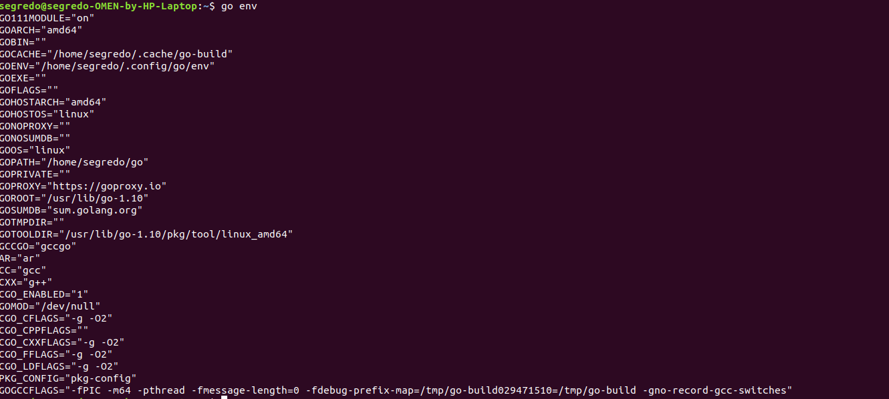
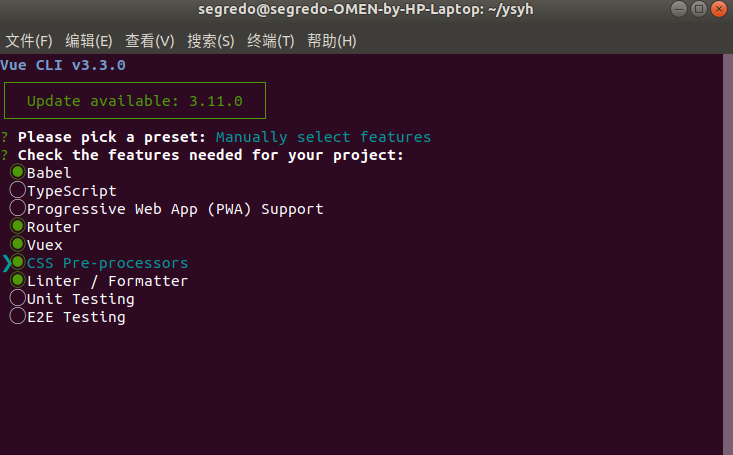
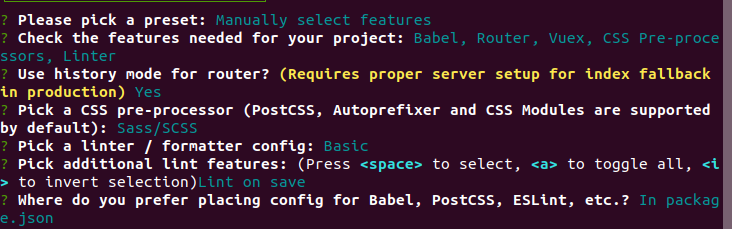

这个golang+vue大部分的内容是基于bydmm（橙卡）大佬的视频学来的，我在这里只是做一下个人开发的笔记，就是图一个乐，毕竟我只是个应届毕业生，如果真的要学请：bydmm的b站空间。
这篇内容适合几乎没什么基础的新人来学这来方面的内容，但是起码得有其他语言的基础，最少大学的java学懂了一些，这里要求的go基础就需要把菜鸟教程中的内容看个大概即可，vue的话只需要你懂一些html的基础，js基础，css基础即可，这些内容都可以在w3c上学即可。接下来就可以看这个系列的巨坑，毕竟我会按照让我萌新时期都能理解的话来说明的。
其次这个教程的内容大概率是真的要作出一个东西的，虽然现在还没有想好作什么。因此这篇就讲个环境安装，话不多说，接下来的内容都是在ubuntu18.04LTS上操作的，建议不低于16.04。如果还在用windows的建议趁早装个双系统。
首先是安装golang，在ubuntu在终端输一行就完事了
sudo apt-get install golang
接下来你可以使用两个指令查看go安装
go env
go version
这里如果是ubuntu18.04应该是go1.10版本的，16.04应该是go1.6版本的，很显然，他不是最新的，那我们肯定要下最新了的，首先去官网下一个最新的go官网，这里选择OS是Linux，Arch选x86-64的版本即可。下载完解压之后先去用go env查看我们的安装位置，环境变量名称是goroot。

在这里可以看到我的环境变量是/usr/lib/go-1.10，接下来我们的操作就是把我们下下来的替换掉apt装得，这里路径请对应自己的版本进行修改。
cd /usr/lib/go-1.10
sudo rm -R *
cd /home/segredo/go1.13.1.linux-amd64/go
sudo cp -R * /usr/lib/go-1.10
这时即可完成版本的替换，用go version试一试是不是最新版本，虽然文件夹还是叫go1.10，但是他的确是新版本了。
新手可能不知道go mod是个什么东西，go mod是golang在1.11后推出的包管理器，总之有他就比以前方便很多，所以我才在之前让你们更新版本。接下来对他进行一下配置，不懂以后可以细说这些环境变量。
sudo gedit ~/.profile
在文件里面加上如下两行,并且保存。
export GOPROXY=https://goproxy.io
export GO111MODULE=on
最后source一下就可以了
source ~/.profile
这里写在profile里面是防止你们shell更换了，直接写成全局完事了，至此，go的基本环境配置算是完成了。
有一说一，vue其实安装更加简单，就是很容易中坑。
首先安装nodejs
sudo apt install nodejs
然后查看是否安装成功：
nodejs -v
npm -v
如果都有版本号即可，npm没有的话请：sudo apt install npm
接下来需要用一个cnpm的东西，他是淘宝的将镜像，总之用他以后装东西会变快。
sudo npm install -g cnpm --registry=https://registry.npm.taobao.org
最后安装vue-cli：
sudo cnpm i -g @vue/cli@3.3.0
安装完毕即大功告成，这里你可以试一试生成一个vue项目，让你见识一下脚手架的一坨选项
sudo vue create xxxxxx（这里xxxx不能大写）
之后如果你不使用默认配置的话会有一堆配置，可能很多东西都没听说过，不过可以按如下配置选，我用起来开发已经足够了。

最后呢，会继续有一堆选项让你选，大概这么选就够了，当然以后会具体说：

最后生成完毕就完事了，说明脚手架能用。